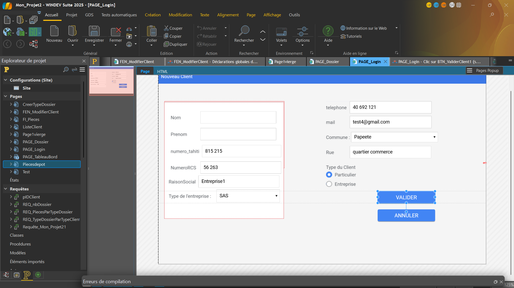
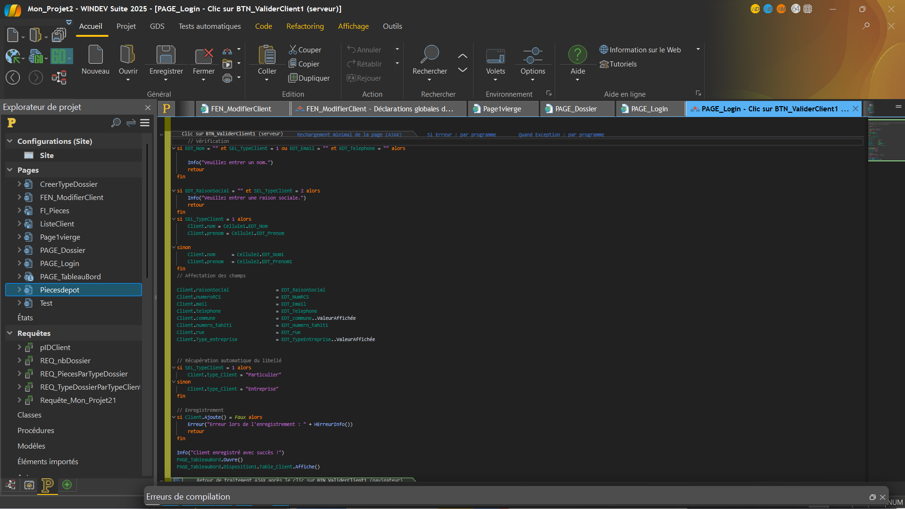
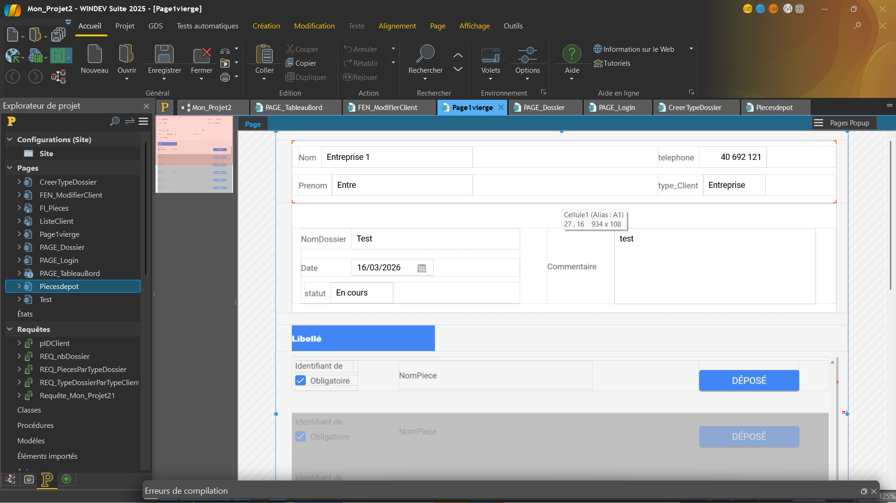

Projet : Gestion de dossiers CCISM
Contexte
Ce projet a été réalisé lors de mon stage au sein de l’entreprise Tahiti Logiciel. L’objectif était de développer une application web permettant de gérer des dossiers pour la CCISM (Chambre de Commerce, d’Industrie, des Services et des Métiers).
Objectifs
- Créer une application de gestion de dossiers
- Permettre l’enregistrement et la modification des données
- Faciliter la consultation des informations
- Améliorer l’organisation des dossiers
Technologies utilisées
- Webdev
- HFSQL (base de données)
Fonctionnalités
- Création de dossiers
- Modification des informations
- Consultation des dossiers
- Gestion des données en base HFSQL
Réalisations
- Participation au développement de l’application
- Création et modification de pages
- Interaction avec la base de données
- Tests et correction de bugs
Mon rôle
Durant ce stage, j’ai participé au développement de l’application web. Notre tuteur nous a demandé de développer une application de gestion de dossier pour la CCISM. J’ai contribué à la création de fonctionnalités, à la gestion des données avec une base de données et à l’amélioration de l’interface utilisateur.
Compétences mobilisées
- Développer une application web
- Exploiter une base de données
- Comprendre un besoin professionnel
- Travailler en équipe
Preuves
Capture de l'application :

Preuves
Capture de la page de login :

Preuves
Capture du bouton valider de la page login :

Preuves
Capture de la page de création de dossier :
